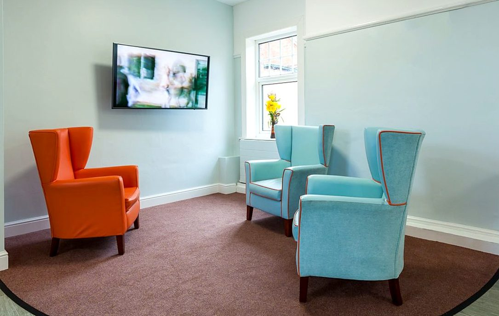
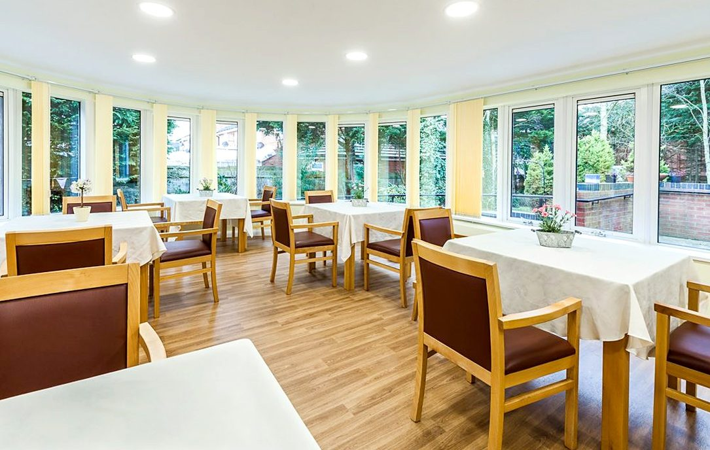

Nursing care for dementia and delirium
Fifty one beds.Four households.
Nursing care for older people living with dementia, delirium and complex mental health needs, in four self contained households, one of them male only high dependency.

51Specialist beds
FourHouseholds
D2ADischarge to assess
ShelleyMale only unit
At a glance
Who it is for, and how people come in
Who it is for
- Dementia
- Delirium, named and treated as a distinct pathway
- Complex mental health needs
- Physical high dependency needs
Routes in
- Discharge to assess
- A planned move
- Respite
- General through to enhanced nursing
Legal frameworks
- Confirmed at referral.
Available here, as at every St Matthews service
- Long term nursing
- Respite
- Discharge to assess
Four households
How the service is organised
ShelleyMale onlyHigh dependency nursing for men.
Byron, Milton and ChaucerMixedDementia, complex mental health and physical high dependency needs.
A placement here
Four steps. One settled home.
- AdmitFour ways inD2A or respiteDischarge to assess, a planned move, respite, or general through to enhanced nursing.
- SettleA room they designTheir own choicesResidents design and personalise their own rooms, and family and friends can visit at any time.
- LiveA day with shapePet therapy and outingsCommunity outings, dementia friendly activities, pet therapy, a multi faith room and a family room.
- StayNursing that stays putFor as long as neededNursing for dementia, delirium and physical high dependency needs, for as long as they are needed.
Daily life and the neighbourhood
What a day looks like, and what is nearby
A day here
Four self contained living areas, each with a living room, dining room, kitchenette and en suite bathroom. A light conservatory and a hairdressing salon.
Nearby
The Brampton Valley Way, fourteen traffic free miles to Market Harborough, begins under a mile north.

What residents say
I feel safe and comfortable here, it’s my home
Why commissioners place here
Kingsthorpe Grange
01Households, not wards.Four living areas, each with its own living room, dining room and kitchenette.
02Delirium named separately.A distinct pathway from dementia, which most homes do not separate.
03Room for families.A separate family room and a multi faith room, with family and friends able to visit at any time.
04A Northampton bed, or the way home.Local placements, and repatriation from out of area.
ProfessionalsMake a referralTell us who you cannot place. Enquiries and assessments welcome now.Start
Referral line01604 844 192One line reaches every service in the group.
BrochuresView a brochureOne page brochures for our services, to view, download or attach to a referral.See them all
FamiliesArrange a visitSee a service for yourself. Tell us which one, and we will set it up.How to visit